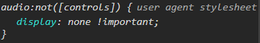

audio在哪裡?
看到audio之後,第一個問題就跑出來了，明明html裡有audio標籤，可是畫面怎麼沒有？讓我們右鍵檢查看看：

再讓我們google一下，發現原來少了controls屬性
我們把controls加上去看看1
<audio controls data-key="65" src="sounds/clap.wav"></audio>
就會發現其中一個audio介面出現在右下角了！
不過這個範例本來就是要讓它隱藏，所以之後如果需要隱藏或是顯示audio就知道要怎麼做了！
什麼是data-* attribute 屬性
簡單來說data-* attribute可以用來儲存自訂的值。*字號是一個可以自訂的名稱，例如：data-key='83'、或data-size='m'，屬性值則可以是任何的字串。
以此範例來說，我們會需要用到keyCode，所以我們在每個<div class="key">中加入了data-key="xx"
後面我們就可以透過Javascript來取得data-* attribute的屬性值
想更深入了解的話，這裡有一篇很棒的data attribute介紹
偵測鍵盤事件
引用Alex經典台詞：
「什麼人、在什麼時候、做什麼事。」
1 | window.addEventListener('keydown',playSound) |
window(什麼人)，在keydown的時候，做playSound這個涵式。
我按下的是哪個鍵
取得keyCode
1
2
3function playSound(e){
const key = e.keyCode
}透過keyCode取得畫面上的對象、取得要播放的audio
1
2const target = document.querySelector(`div[data-key="${key}"]`)
const audio = document.querySelector(`audio[data-key="${key}"]`)
transitionend事件
在這個範例中他經替我們寫好按下去的效果了(css)，所以我們只要透過target.classList.add('playing')套上playing這個class就可以了。
- classList.add() 新增
- classList.remove() 移除
- classList.toggle() 切換
propertyName判斷
雖不影響功能，但是值得注意的細節（自我要求）
在transitionend的事件中，我們使用了propertyName去判斷，目的讓propertyName只要不是transform的屬性就都不要做了，可以試試不加判斷的console.log(e)就會看到噴出很多事件。(因為transitionend會針對每一個屬性去觸發)1
2
3
4target.addEventListener('transitionend',function(e){
if(e.propertyName !== "transform") return
this.classList.remove('playing')
})
播放聲音
就給他play下去吧！1
2audio.currentTime = 0
audio.play()
為什麼要加currentTime呢，目的是要讓播放進度回到0(重頭播放)
假設今天音訊是5秒以上，就可以明顯感受到差異了，要不要加就看效果需求。
完成原始碼
1 | function playSound(e){ |
不負責任聲明ಥ◡ಥ：
純屬個人筆記，每個範例都有不同的寫法，還有很多細節可以加入，甚至可能有看不到的bug，有任何問題都歡迎提出一起研究哦，我會很感謝您的！沒有好不好，只有適不適合 - 2018.08.07